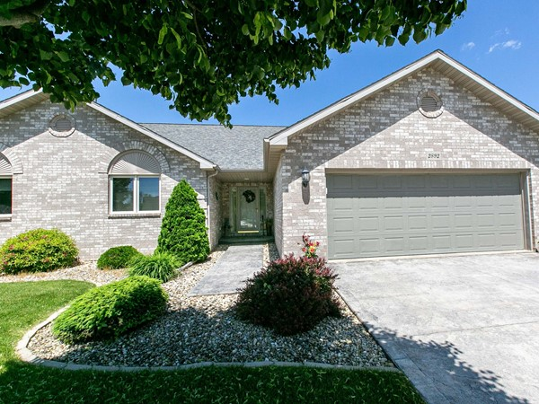

If you’re looking to sell your home but don’t want to waste money on realtor's fees, you can list it yourself. While it can require more effort to sell house without realtor Dubuque residents can legally do it. Dubuque has a fairly competitive market, so it’s important to understand how the process works to ensure the sale is legal and your home doesn’t get lost in the crowd. In this article, we’ll explain the different options homebuyers have for selling their homes so you can choose the one that’s right for you.
Selling your home yourself can save you 2.5 to 3% in commission, which is a significant amount. However, the process can be labor-intensive depending on the method you choose, so it’s important to know your options. There’s three ways you can sell your house without a realtor in Dubuque: Listing it yourself, selling to a cash buyer, or using limited service brokers.
Listing your home for sale by owner on the traditional market is a very hands-on and labor-intensive process. It involves the following:
Getting your home “show-ready” is one of the most important steps you can take before you list it. You want to remove personal items, clean it thoroughly, and make any necessary repairs. Once complete, you’ll need to determine a price. Take your time and research comparable properties in your area to ensure you don’t overprice your home. This step is often difficult for homeowners because they have an emotional connection to the property that can make them price it higher than its worth. Taking a step back and pricing it according to the market will help it sell quickly. Finally, you’ll need professional-looking pictures of the home to help it stand out online. Hiring a real estate photographer is a great investment, but you can do it yourself.
This step is critical when selling by owner. You need to list your home on MLS for a flat rate fee (between $100 and $500). Once it’s in the MLS database, you can post it on sites like Trulia, Realtor.com, and Zillow. If you prefer not to list on MLS, you can try other platforms like FSBO.com and Facebook Marketplace, but be very wary of scammers.
Once your property is listed, it’s time to market it. You can add yard signs, host open houses, and host showings. How much marketing you do is up to you, but for the best results, you want your home to gain as much visibility as possible.
When you receive an offer for your home, you’ll want to make sure the sale is legal. Be sure to provide the buyer with all Iowa-required property disclosures. You’ll either work with the buyer directly or with their agent to negotiate price, repair requests, and the closing timeline. Even when selling yourself, you’ll need a title company or real estate attorney to prepare the legal documents and take care of the escrow process, since they require a licensed agent.
If you don’t want to go through the time and expense of listing your home for sale yourself, you could sell it to a cash buyer. This option is popular since you don’t have to worry about making repairs, cleaning the home, or paying high fees. When using a reputable company, you can complete the entire process, from getting a quote to closing, in only a few weeks. You can also get fair market value for your home, so you don’t have to worry about low-ball offers. You do need to be careful when choosing this option and do your research on the company you use. Read reviews and make sure they’re trusted within the community. You may also get a lower price than selling on the traditional market, which is another consideration.
A limited service broker plays the role of a realtor but charges a lower fee. They handle the listing, negotiations, and open houses, which could be a good option if you want to list on the traditional market. While you will pay a lower cost, you’re still subject to the movement of the Dubuque real estate market, so you could still wait months for your house to sell.
When it’s time to sell house without realtor Dubuque residents can choose to list themselves, sell to a cash buyer, or use a limited service broker. Each option has pros and cons, and the one you choose depends on your goals and unique situation. Sell your home quickly for cash at fair market value with Dubuque Home Buyers. All it takes is 3 simple steps, and you can have cash in hand in as little as 10 days. Call 563.227.8157 to see how easy it is to sell your home and skip the hassle and cost of listing on the traditional market with Dubuque Home Buyers.
Get a free, no-obligation cash offer today. No repairs, no commissions, close on your timeline.
Get My Free Cash Offer 📞 Call or Text (563) 227-8157